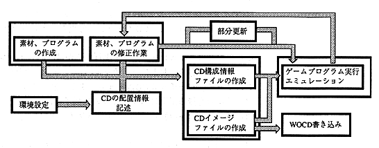

Return to previous page ｜ Return to menu ｜ Go to next page
1.2 Rough flow of work
This section explains the rough procedure for performing emulation using the virtual CD emulator.
Before starting the virtual CD emulator, read the VCD I / F board and connect the cable. The terms used in the VCD I / F board are also used in this manual, but are not explained here as they are already understood.
The following settings on the VCD I / F board are required to operate the virtual CD emulator.
- Jumper number for selecting interrupt number (J3)
- Jumper number for selecting the channel number for DMA transfer (J4)
- Jumper number for selecting the I / O address of the VCD I / F board (J5)

Figure 2. Rough flow of work
A rough flow of the work is shown in Figure 2, and the figure is explained below. In the next chapter, we will work with more specific examples.
(1) Preferences
This is the work of substituting the setting items of the VCD I / F board into the environment variable VCDIO.
It is necessary to have consistency with the settings on the virtual CD emulator program and the VCD I / F board. The necessary setting items are the numbers of the three jumpers on the VCD I / F board. If there is a discrepancy between these values, the virtual CD emulator will not be able to communicate with the VCD I / F board. This setting is determined when the board is installed on a PC compatible machine, so if you assign a value to the environment variable with AUTOEXEC.BAT at this time, it will automatically be turned on each time you turn on the PC compatible machine. This environment setting will be done.
Return to previous page ｜ Return to menu ｜ Go to next page